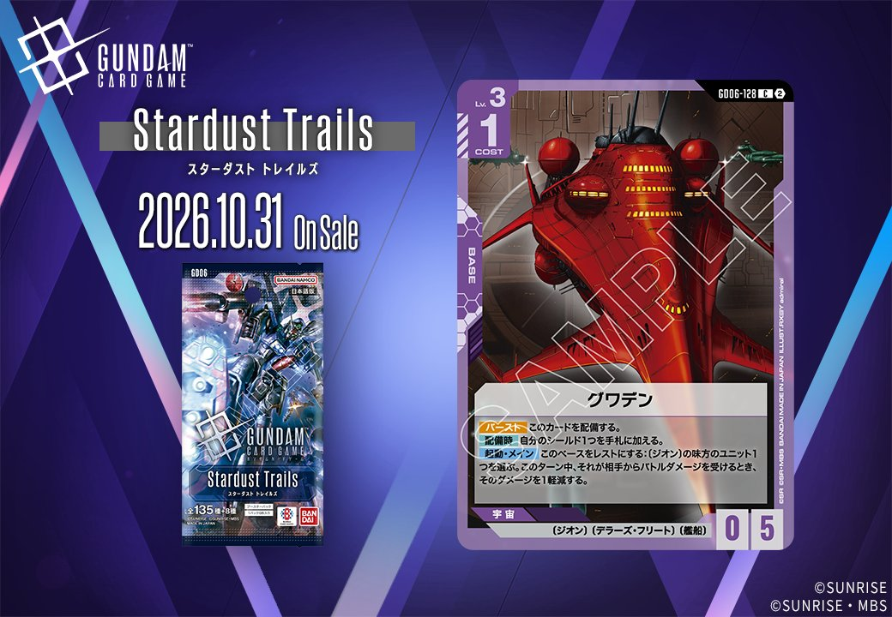
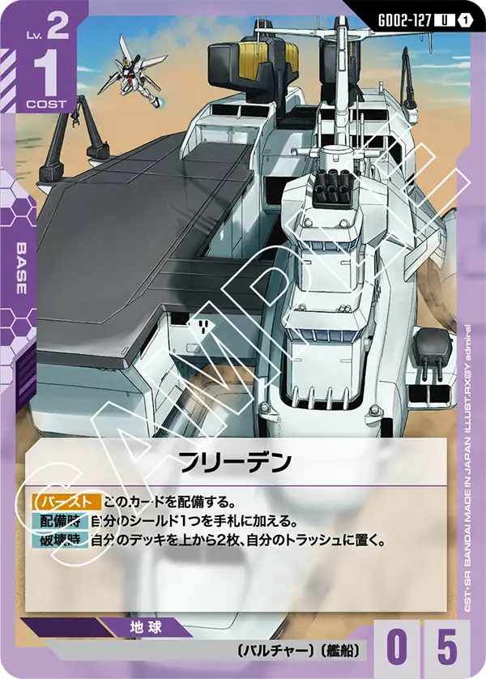
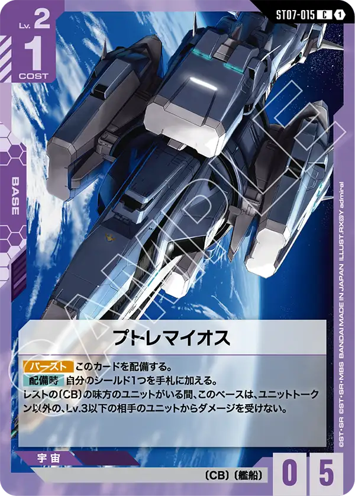
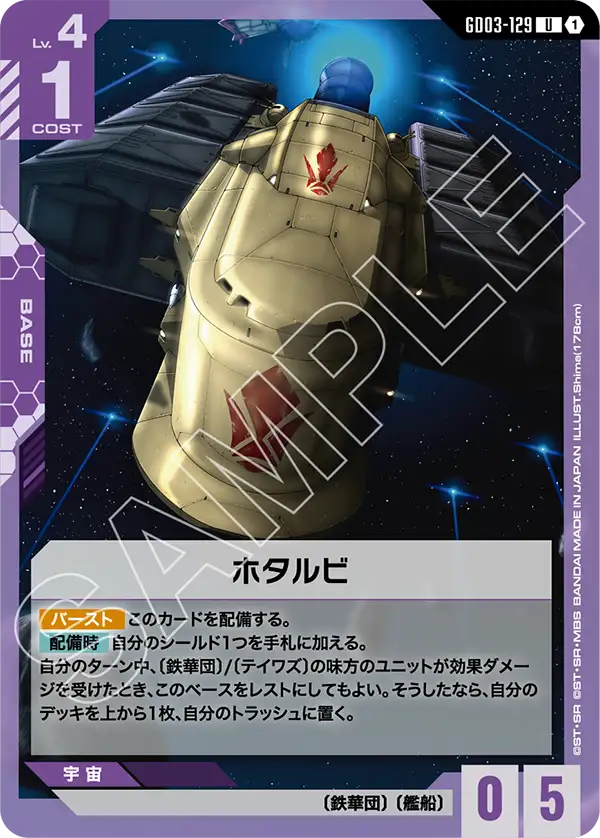

GD06「Stardust Trails」に収録される新カード2枚を紹介します。一方はPILOTのケリィ・レズナー（GD06-095）、もう一方はBASEのグワデン（GD06-128）で、いずれも色は紫です。発売日は2026年10月31日となっています。
ケリィ・レズナー (GD06-095)
| 色 | 紫 | タイプ | PILOT |
| Lv | 3 | コスト | 1 |
| 補正 AP | 1 | 補正 HP | 1 |
効果: 【バースト】このカードを手札に加える。【アタック時】このユニットに1ダメージを与えてもよい。そうしたなら、〔ジオン〕の自分のユニット1つを選ぶ。このターン中、それをAP+2する。
ケリィ・レズナーは紫のパイロットで、Lv.3・コスト1と軽く、リンクの指定はありません。【バースト】で手札に加わるため、シールドから捲れても無駄になりにくいです。本命は【アタック時】の効果で、搭乗ユニットに1ダメージを与えると、〔ジオン〕の自分のユニット1つをこのターン中AP+2できます。搭乗ユニット自身が〔ジオン〕なら、攻撃役の打点を自力で引き上げられるでしょう。ただし代償は耐久を削る形になり、補正もAP1/HP1と小さいため、戦闘が続く場面では負担が残ります。紫の採用上位には三日月・オーガスなど自軍にダメージを与えるカードもありますが、AP強化は〔ジオン〕限定です。特徴を揃えたデッキで採用を判断するカードになります。

グワデン (GD06-128)
| 色 | 紫 | タイプ | BASE |
| Lv | 3 | コスト | 1 |
| AP | 0 | HP | 5 |
| 特徴 | 〔ジオン〕、〔デラーズ・フリート〕、〔艦船〕 | ||
効果: 【バースト】 このカードを配備する。【配備時】自分のシールド1つを手札に加える。起動・メイン このベースをレストにする:〔ジオン〕の味方のユニット1つを選ぶ。このターン中、それが相手からバトルダメージを受けるとき、そのダメージを1軽減する。
グワデンはLv.3・コスト1で配備できるHP5のベースです。【配備時】に自分のシールド1つを手札に加えるため、シールドを1つ減らす代わりに手札を1枚補充できます。【バースト】で公開された場合はそのまま配備されるので、配備時の効果まで含めて無駄になりません。起動効果は、このベースをレストにして〔ジオン〕の味方ユニット1つを選び、そのターン中に相手から受けるバトルダメージを1軽減するものです。メインに起動する効果のため、自分のターンにバトルするユニットの被ダメージを抑える使い方が中心になるでしょう。対象は〔ジオン〕に限られるので、構築段階で対象となるユニットの枚数を確保しておく必要があります。
関連カード
-
 ガンダム・バルバトスアダプト(GD03-056)紫系デッキ内採用率35.8% (2917デッキ)
ガンダム・バルバトスアダプト(GD03-056)紫系デッキ内採用率35.8% (2917デッキ) -
 三日月・オーガス(ST05-010)紫系デッキ内採用率35.3% (2874デッキ)
三日月・オーガス(ST05-010)紫系デッキ内採用率35.3% (2874デッキ) -
 ガンダム・バルバトス（第1形態）(GD02-054)紫系デッキ内採用率33.8% (2752デッキ)
ガンダム・バルバトス（第1形態）(GD02-054)紫系デッキ内採用率33.8% (2752デッキ) -
 百錬(ST05-006)紫系デッキ内採用率25.2% (2055デッキ)
百錬(ST05-006)紫系デッキ内採用率25.2% (2055デッキ) -
 グレイズ改(ST05-004)紫系デッキ内採用率24.4% (1990デッキ)
グレイズ改(ST05-004)紫系デッキ内採用率24.4% (1990デッキ) -
イサリビ(ST05-015)紫系デッキ内採用率5.5% (452デッキ)
-
ミネルバ(ST09-010)紫系デッキ内採用率1.1% (86デッキ)
-

フリーデン(GD02-127)紫系デッキ内採用率0.3% (23デッキ) -

プトレマイオス(ST07-015)紫系デッキ内採用率0.1% (7デッキ) -

ホタルビ(GD03-129)紫系デッキ内採用率0% (2デッキ)